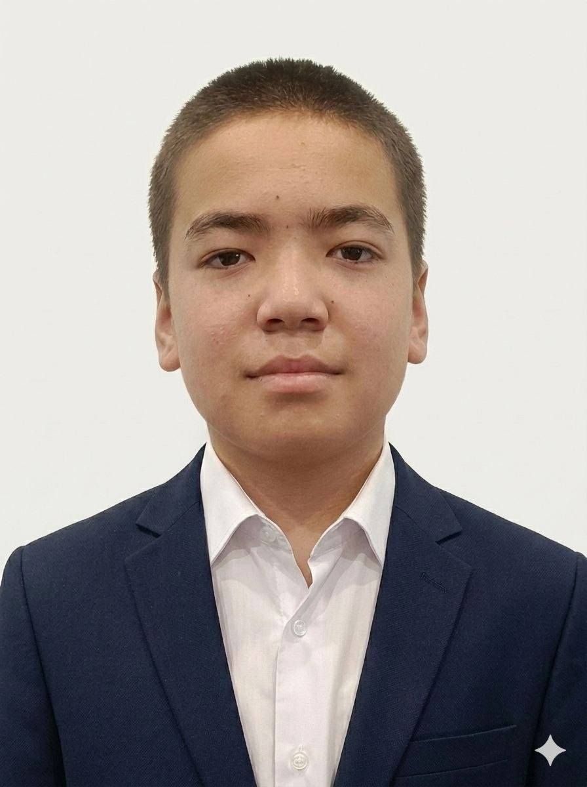
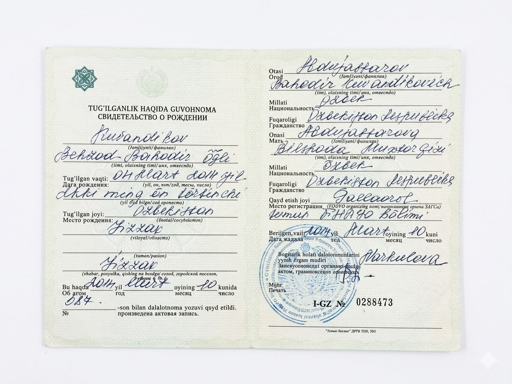

Behzodbek Premium Raqamli Ekotizimiga Xush Kelibsiz
Ushbu platforma yagona sahifali oddiy saytlardan charchaganlar uchun maxsus tayyorlandi.
99.9%
프로그램 성능
제가 당신을 자세히 소개하겠습니다. 총 7페이지 분량입니다.
나에 대하여
제 이름은 베흐조드벡입니다. 한국어를 배우고 있는 학생이며, 자기계발에 열심히 노력하고 있습니다. 지식을 쌓고, 새로운 기술을 익히고, 미래의 목표를 향해 나아가는 것이 저의 핵심 가치입니다, 472 저는 다양한 분야에 관심이 많으며, 제게 가장 적합한 진로를 찾기 위해 노력하고 있습니다. 여가 시간에는 새로운 것을 배우고, 유익한 활동을 하며, 자기계발에 힘쓰는 것을 좋아합니다. 제 궁극적인 목표는 미래에 해당 분야의 전문가가 되어 사회에 기여하고 큰 성공을 거두는 것입니다. 저는 노력과 끈기, 그리고 인내심만 있다면 어떤 목표든 이룰 수 있다고 믿습니다.


학업 오리엔테이션
제 가장 큰 목표는 한국에 가는 것입니다. 한국에서 전문가로 일하면서 부모님을 움라 순례에 보내드리는 것이 제 꿈입니다. 이러한 꿈을 이루기 위해 저는 현재 최연소 학생으로서 한국어를 완벽하게 배우려고 노력하고 있습니다! 그 누구도 저에게 한국어에 관심을 갖게 해 준 적도, 저에게 무언가를 제안해 준 적도 없었습니다! 저는 제가 흥미를 느끼는 분야를 공부하는 것을 좋아합니다. 저는 스스로 큰 목표와 꿈을 세웠습니다. 저는 어떤 어려움이 닥치더라도 극복할 수 있는 힘을 가진 책임감 있는 학생이라고 생각합니다!
교육
저는 현재 가나의 Nam Learning Center에서 1년 이상 학습 경험을 쌓고 있습니다. 현재 30 Secondary School 6학년 B반 학생입니다.
숙소
저는 Sh.Rashidov 지역, Yangidiyor 지역, Aydin Abot 거리, 집 17에 살고 있습니다.
숙소
Sh.Rashidov tumani, Yangidiyor mahallasi, Oydinobot ko'chasi, 17 honadond
502 저의 핵심 가치는 지식을 습득하고, 새로운 기술을 배우며, 미래의 목표를 향해 나아가는 것입니다. 저는 다양한 분야에 관심을 가지고 있으며, 저에게 가장 적합한 진로를 찾기 위해 노력합니다. 여가 시간에는 새로운 것을 배우고, 유익한 활동에 참여하며, 자기 계발에 힘씁니다. 저의 궁극적인 목표는 해당 분야의 전문가가 되어 사회에 공헌하고, 큰 성공을 거두는 것입니다.
Aloqa
부모님의 전화번호와 텔레그램 프로필을 남겨둘 테니 연락해 보세요.